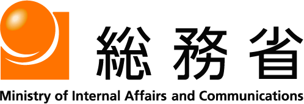
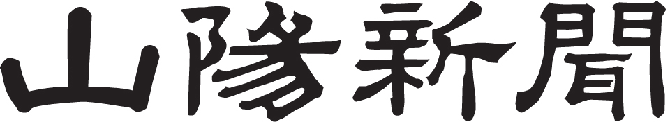

代表取締役
中本 怜祐
Ryosuke Nakamoto
神山まるごと高専 デザインエンジニアリング学科1年
岡山県出身の16歳。ミライノピッチ3部門受賞、なんチャレ2025最優秀賞、Akatsukiプロジェクト採択など、高専生として積極的に事業開発・技術開発に取り組む。
ポートフォリオを見る ↗YUUTH INC. / KAMIYAMA, TOKUSHIMA
業務ツール・MVP開発を、高専生チームで。
株式会社Ｙｕｕｔｈは、全国の高専生と企業・地域をつなぐ「隣の高専生」を運営しています。想いと技術を持つ若者が、社会で挑戦できる機会をつくります。
数字で見るYuuth
「隣の高専生」参加メンバー数（公開情報）


ABOUT
MISSION
高専生がイノベーションの核になる社会を作る。
高専生は、在学中から実際に手を動かして作る力を持っています。Yuuthはその力が教室の外で活かされるよう、企業や地域の課題と高専生をつなぎ、案件の窓口・進行・品質確認までを会社として引き受けます。
BUSINESS
高専生と企業・地域をつなぐプラットフォーム
業務ツール・社内Webアプリ・MVP・AI活用の要件整理から開発・保守まで。法人窓口をYuuthが担当し、案件に合う高専生メンバーを編成します。
まずは案件と継続接点をつくり、実績と体制に合わせて支援領域を広げます。
WORKS


MEMBERS
Ryosuke Nakamoto
神山まるごと高専 デザインエンジニアリング学科1年
岡山県出身の16歳。ミライノピッチ3部門受賞、なんチャレ2025最優秀賞、Akatsukiプロジェクト採択など、高専生として積極的に事業開発・技術開発に取り組む。
ポートフォリオを見る ↗
Taito Hakamada
神山まるごと高専 デザインエンジニアリング学科1年
山梨県出身。サイエンスキャッスル研究費2026 ものづくり0.THK賞 採択チーム、第37回全国高等専門学校プログラミングコンテスト 自由部門出場、IchigoJam for MCX 開発メンバー。
NEWS
株式会社Ｙｕｕｔｈを設立しました
COMPANY